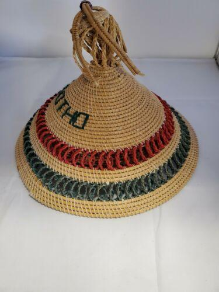
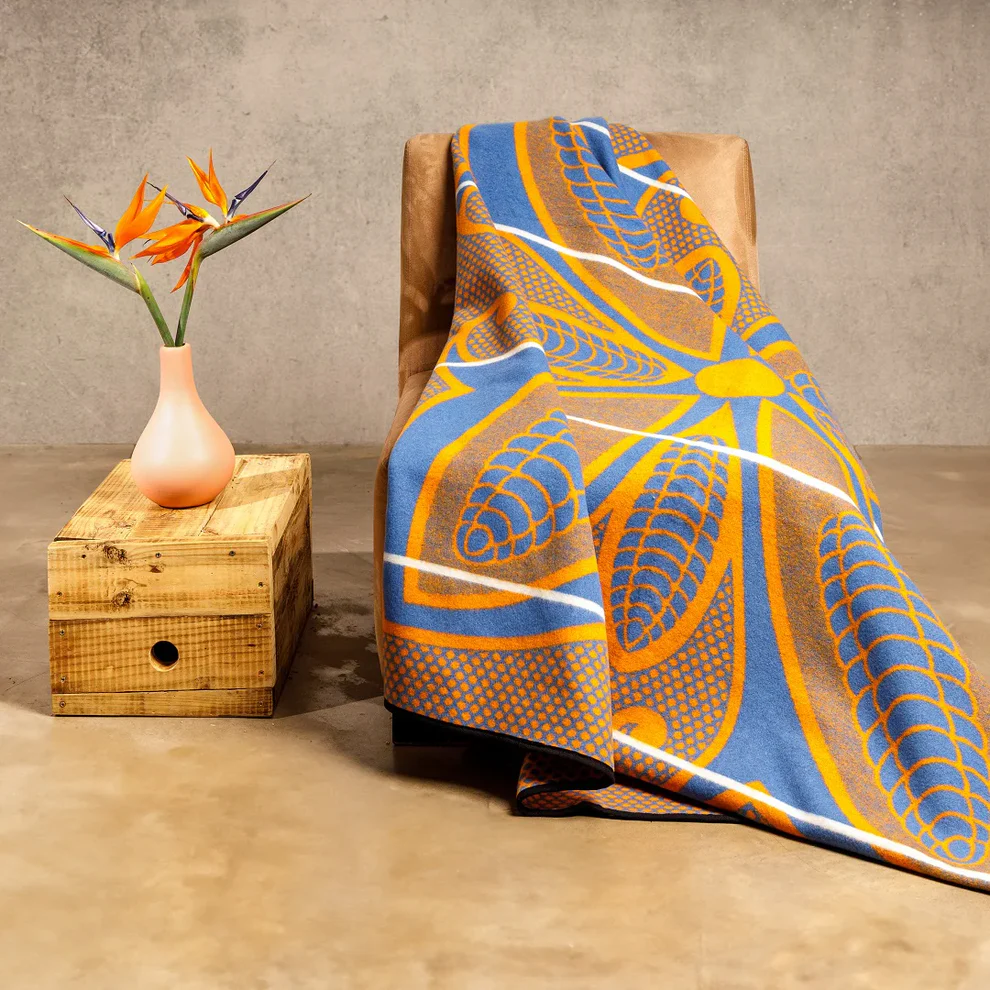

Mokorotlo is a traditional Basotho hat that represent Qiloane. Is made of hay called "moseea"
Mokorotlo is a traditional Basotho hat that represent Qiloane. Is made of hay called "moseea"
attire of males and females during intiation period
That's the attire girls or older ladies wear when performing that dance known as mokhibo.
Males wear such attire when dancing ndlamo dance, that is leqhapha which falls under the clothes of Basotho
This one is not actually the attire of Basotho is just that is kind of clothes worn during the perfamence of the traditional dance called mohobelo
Lefitori is known to be the blanket worm by the Chief or the King, hence it called the the chief's blanket
This kind of blanket is mostly worn by Basotho women, it is called Sefate
Motlatsi-Khosana is the blanket worn by the young chiefs and kings, this shows that in the future they have the great things to do

This is the most attractive Basotho blanket ever to be made, one of it's kind, and is known as Kharetsa blanket
Seanamarena is the most popular Basotho blanket, it is worn by both males and females, the colour is the key factor of who should wear such blanket

This kind of blanket is called Poone, because it has features of the corn on it's face to show the love of maize farming
This kind of blanket is called Poone, because it has features of the corn on it's face to show the love of maize farming

Ts'ets'e is the hay-made hat that is used during hot days to reduce the intence of heat caused by the sun
Molia-nyeoe, like ts'ets'e it made of hay. The difference is that molia-nyeoe has the long tube-like thing, which i can't tel it's name. This kind of hat is worn by male the trials on the court, by the time the sentance is given they put them off, but if things go opposite they remain on their heads to show the sentance not given yet

Kuoane is made of animal hides, for instance, cow and sheep hides are mostly used to make such product. It worn mostly by those that perform mokhibo dance
This shoes are are made mostly by cow hides, they were worn by Basotho in acient times

Sehoeshoe is the cotton grafted dress, which is worn by females, mostly during the weeding feats and big coutry occassions
Rempi is made of goat leather. It is worn by kings or chiefs to show thier great power and authority.
Lehlosi is the blanket made of wild animals' hides mostly the hyena hide, it worn by the King
This earing is worn by the king, it shows how he is honored
Leqhapha is known to be Basotho trouser which is only worn by men not women
Moqhaka is a band-like thing, which is worn by the King on his head
Here is the full attire of the Basotho women, they look look a little like this during cultural occassions

Thethana is choth worn by young Basotho females